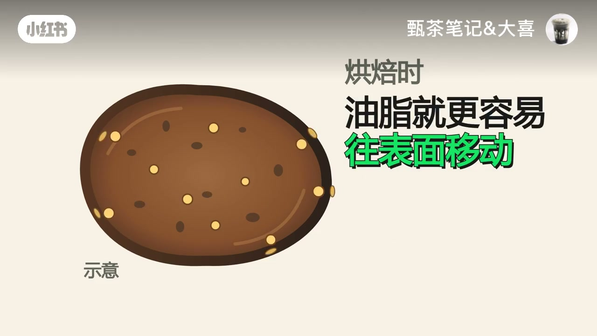
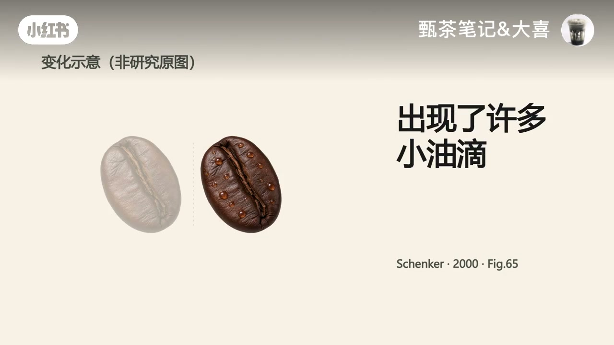
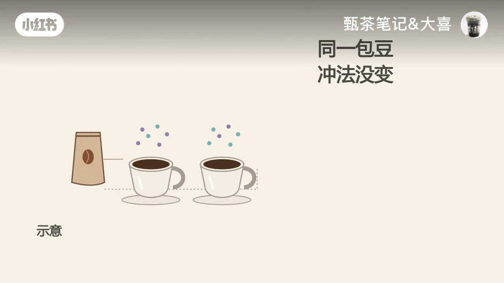
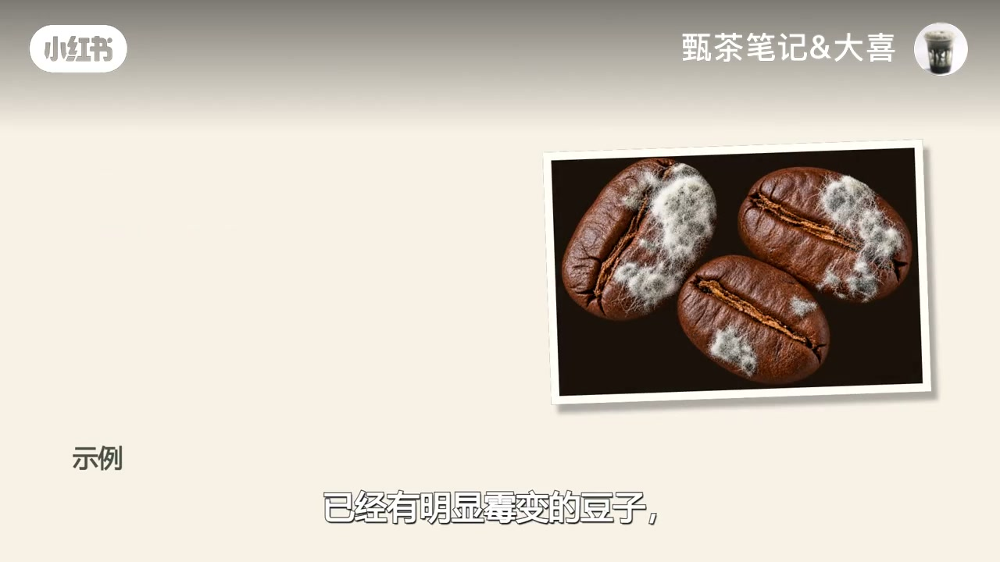

内容要点
小红书账号「甄茶笔记&大喜」用一整豆表面的油光当切口：油亮既不能证明更香，也不能单独证明放坏了。视频先用示意动画讲清油脂本就存在、烘焙与存放会让油迁到表面，再把「油光」和「挥发香气」拆开，最后给出一套看烘焙深度、日期、开袋与储存的判断清单，并划清霉变属于安全边界、不要试喝。下列实录按时间线展开；观点均标注为作者口播与画面。
知识结构
油亮≠更香，也≠放坏；豆子本就有油脂，深烘更易出油。
存放后小油滴是原有油脂迁移；不能只按放了多少天判断。
看见的是油，闻到的是挥发物；油光变多≠香气变多，还可能哈喇。
看深烘/日期/开袋/密封/温度；香气变弱查储存；霉变勿试喝。
别冲油光买，也别只因出油就扔；密封避高温，盯香气味道。
油亮只能说明油到了表面。买豆别冲着油光买，扔豆也别只因为出油；开袋后密封、避高温，用实际香气与味道做主判断，霉变豆子直接放弃试喝。
00:00–00:30开场：油亮既不能证明更香，也不能证明放坏了
视频一上来就把观众常有的直觉压成二选一：「咖啡豆油亮亮的，是更香还是放坏了？」画面用三颗反光明显的深烘豆特写把「油亮」钉在视觉上，随后立刻用大字纠偏——既不能证明更香，也不能证明放坏了。
约 00:04 到 00:30 口播几乎空白，信息主要靠画面文案推进：咖啡豆本来就有油脂；普通原味豆表面看到的油，通常来自豆子内部；烘焙时豆子会膨胀，油脂更容易往表面移动；一般来说烘得越深越容易出油，有些深烘豆在烘焙时就能看到油光。这一段把「油」从神秘卖点还原成物理迁移。

00:30–00:54浅烘干爽≠无油；存放后的小油滴是迁移
口播接上：浅烘豆看着干爽，也不等于里面没有油。那为什么有些豆子刚开始不怎么亮，放着放着却出油了？作者引用烘焙研究拍到的变化（画面标注 Schenker·2000 Fig.65，并注明「变化示意，非研究原图」）：深烘样本刚烘完时表面比较光滑，存放之后出现了许多小油滴。
关键句是：「这不是存放让豆子凭空多了油，而是原有的油脂继续移到了表面。」烘焙方式也会影响这个变化，因此不能只按放了多少天判断。

00:54–01:19油到了外面，香气不一定更足
观众下一问很自然：油到了外面，香气是不是也更足了？作者直接答「不一定」。你看到的是油；闻到的咖啡香来自许多能挥发的香气物质。油光变多不等于香气也变多。
存放过程中香气会散失，也会发生化学变化，油脂还可能氧化。有的豆子看着仍然油亮，香气却已经弱了，甚至出现哈喇味。反过来，表面没什么油的豆子，也不能靠这个证明自己新鲜——干爽与新鲜度之间没有单向箭头。
01:19–01:46拿到油亮豆怎么看：清单 + 霉变边界
实用段给出检查顺序：先看是不是深烘；再看烘焙日期、开袋多久、有没有密封、有没有放在热的地方。如果是烘焙日期很近的深烘豆，不能一见油就认定它坏了。
若同一包豆、冲法没变，香气却明显变弱或出现陈旧味，就要留意储存和新鲜度，别把它解释成「油更多所以更香」。作者同时划清边界：风味比较不是安全检测；已经有明显霉变的豆子，就不要再试喝了——画面给出带白色霉斑的豆子示例。


01:46–02:04记住：油亮只说明油到了表面
收束很干脆：油亮只能说明油到了表面。买豆别冲着油光买；扔豆也别只因为它出油。开袋后密封好、避开高温，关注实际的香气和味道变化，比盯着它亮不亮更有用。
片尾留下互动题：「你那包豆，是刚开袋就油亮，还是放着放着才出油？」——把观察从单一外观指标，拉回「何时出油」与储存史。
详细文字转录（52段）
以下内容按 Whisper 原始分段完整呈现，可能包含识别误差；正文已按画面与语境校正（如开袋、哈喇味、霉变），转录区保持原样以便核对。约 00:04–00:30 口播空白，信息见画面文案与章节叙述。
咖豆油亮亮的是更香还是放坏了
油亮
浅烘豆看着干爽也不是里面没有油
可为什么有些豆子刚开始不怎么亮
放着放着却出油了
有像烘焙研究就拍到的这种变化
深烘样本刚烘完时表面比较光滑
存放之后出现了许多小油滴
这不是存放让豆子凭空多了油
而是原有的油脂继续移到了表面
烘焙方式也会影响这个变化
不能只按放了多少天判断
那油到了外面香气是不是也更足了
不一定
你看到的是油
闻到的咖啡香来自许多能挥发的香气物质
油光变多不等于香气也变多
存放过程中香气会散失
也会发生化学变化
油脂还可能氧化
有的豆子看着仍然油亮
香气却已经弱了
甚至出现哈拉味
反过来表面没什么油的豆子
也不能靠这个证明自己新鲜
所以拿到一包油亮的豆子
先看它是不是深烘
再看烘焙日期开待多久
有没有密封
有没有放在热的地方
如果是烘焙日期很近的深烘豆
不能一见油就认定它坏了
如果同一包豆
冲法没变
香气却明显变弱或者出现陈旧味
就要留意储存和新鲜度
别把它解释成油更多
所以更香
但风味比较不是安全检测
已经有明显没变的豆子
就不要再试喝了
记住油亮
只能说明油到了表面
买豆别冲着油光买
扔豆也别只因为它出油
开待后密封好
避开高温
关注实际的香气和味道变化
比盯着它亮不亮更有用
你那包豆
是刚开袋就油亮
还是放着放着才出油